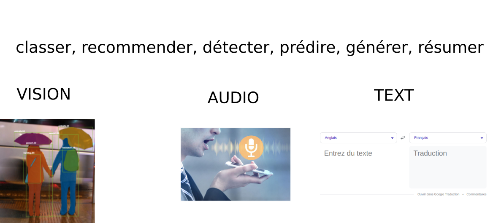
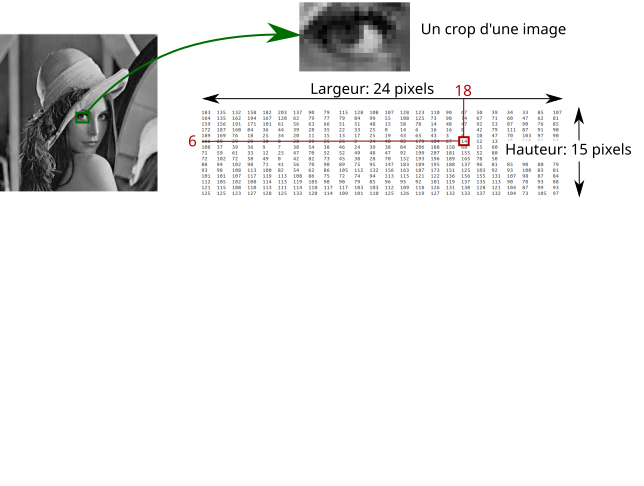
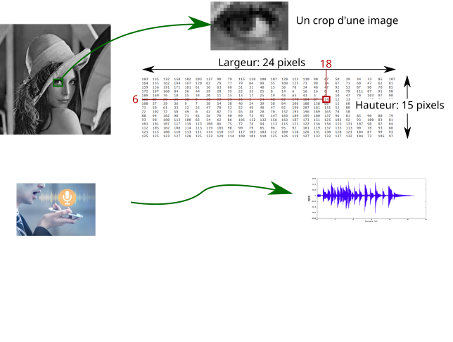
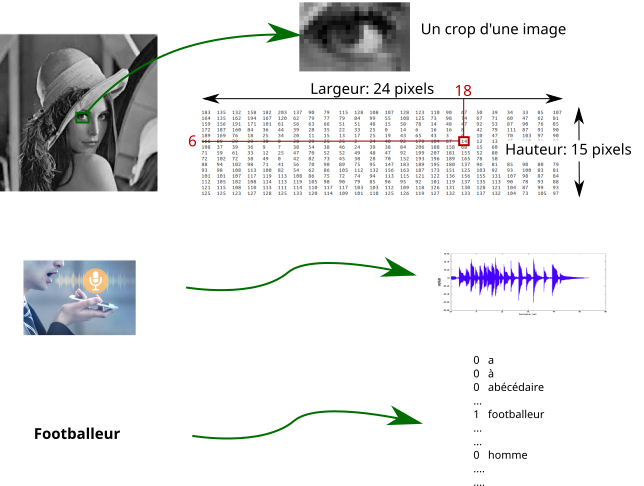
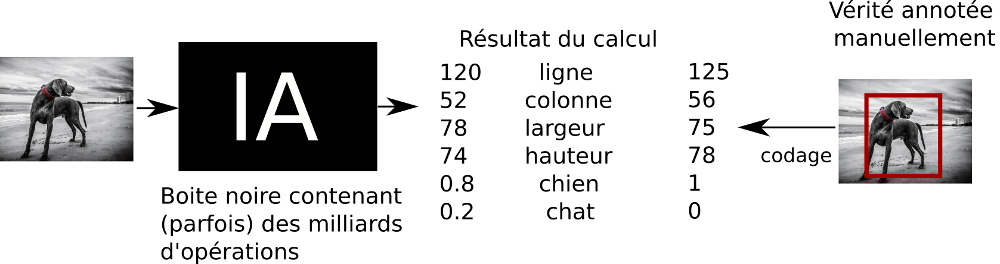
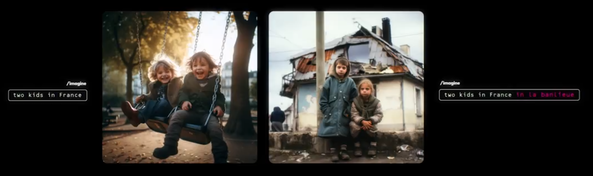

C'est quoi l'IA ? C'est bien ou c'est mal ?
Paul Gay - Enseignant chercheur - Cy-TECH
Qui sommes-nous ?
http://iapau.orgL'Association IA PAU rassemble dans la bonne humeur chercheurs, enseignants, étudiants et entrepreneurs pour explorer notre rapport à l'IA.
- Début décembre : Conférences grands publics : IA & éducation, travail, environnement
- After works plus techniques
- Compétition étudiante
Définition
Qu'est ce que l'IA ?Selon le parlement Européen
L’IA désigne la possibilité pour une machine de reproduire des comportements liés aux humains, tels que le raisonnement, la planification et la créativité. L’IA permet à des systèmes techniques de percevoir leur environnement, gérer ces perceptions, résoudre des problèmes et entreprendre des actions pour atteindre un but précisDéfinition
Qu'est ce que l'IA ?- Ce n'est pas très bien défini
- Écriture de règles
- Aptitude à apprendre sans programmation explicite
- Extraire des connaissances à partir de données
- L'IA (forte), ça n'existe pas
Une définition :
Transformer des données en chiffres, qui sont manipulés jusqu'à un résultat utile pour une application réelle. (K. Smaili)Pourquoi maintenant ?
Alan Turing : what we want is a machine that learns from experienceLes algorithmes précédent les applications
- Plus de données et de puissance de calcul
- Plus d'outils (open source)
Que sait faire l'IA ?
Retirer de l’information d’un grand volume de données
Applications des IA faibles: administration, relation client, média, médecine, cinéma, maintenance, robotique, finance,...




Comment apprendre une IA pour un problème précis à partir de données ?
Comment formuler une tâche ?
Par ex: différencier les chiens et les chats ?
Apprendre l'IA sur une base d'apprentissage construite par un humain

Comment apprendre une tâche ?

- Construire un modèle qui calcule (mal) deux chiffres
Comment apprendre une tâche ?
- Construire un modèle qui calcule (mal) deux chiffres
- Comparer ce calcul à la vérité annotée
Comment apprendre une tâche ?

- Construire un modèle qui calcule (mal) deux chiffres
- Comparer ce calcul à la vérité annotée
- Construire un objectif pour la machine
Comment apprendre une tâche ?
- Construire un modèle qui calcule (mal) deux chiffres
- Comparer ce calcul à la vérité annotée
- Construire un objectif pour la machine
- Changer légérement les opérations pour que le résultat s'approche de cette annotation
Comment apprendre à partir d'expériences ?
des milliards de petites modifications pour s'approcher de la vérité (sur les données d'apprentissage)
Comment faire de la détection ?
Quels chiffres doit calculer l'IA pour classer chien/chat ET prédire la position de l'animal ?
Comment faire de la détection ?
Quels chiffres doit calculer l'IA pour classer chien/chat ET prédire la position de l'animal ?
6 chiffres : hauteur, largeur, x, y, score du chat, score du chien
Comment générer des mots ?

Calculer un score pour chaque mot du dictionnaire
- Abimer les données automatiquement
- Et entraîner une IA pour réparer
- ... est un footballeur
- Antoine ... un footballeur

Et ChatGPT ?
Entraînement d'un modèle de langage

Sur l'ensemble d'internet, avec (peut-être) 384 GPUs pendant 3.5 mois
Et une correction manuelle pour construire l'agent conversationnel ChatGPT
Automatisation des tâches
- De nouveaux outils offrant un gain de compétitivité
- Un assistant pour un regard extérieur sur son travail
- Outils d'aide à la décision (médecine, finance, stratégie)
Et bien d'autres: prédiction de la structure des protéines,
à retrouver en replay, la conférence de Malick Ghallab à IAPau6chatGPT limitations
- La vérité n'est pas prise en compte pendant l'entraînement
- Sensible à de légères variations
Problème des biais et des contenus toxiques encore existants.
- Ligne éditoriale de ChatGPT ? (plutôt américaine)
Ne pas fournir de données à ChatGPT !!
Des biais dans les IAs
 Nous avons vu que ces modèles comportent des biais contenus dans les données- Les chiens dans la neige sont des loups
- "Banlieue" est un mot mal connoté